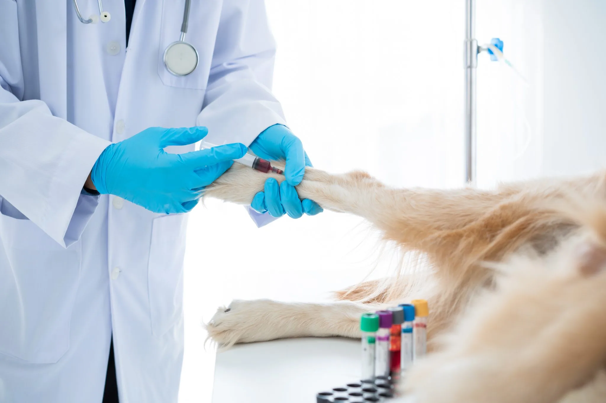

A Importância da Pós-Graduação em Plantão Veterinário

A medicina veterinária é uma área que exige constante
atualização, especialmente quando se trata de urgências e emergências. Um plantão não permite margem
para
dúvidas: cada decisão deve ser rápida, precisa e baseada em conhecimento técnico sólido.
Pensando nisso, a pós-graduação em Plantão Veterinário da Unifametro se
tornou essencial para quem deseja atuar nessa área com segurança e excelência, combinando teoria e
prática
para formar profissionais altamente qualificados.
1. A Lacuna Entre a Graduação e a Prática Real
Durante a faculdade, os estudantes aprendem a base teórica da medicina veterinária,
mas
muitas vezes não têm contato suficiente com situações reais de emergência. No plantão, os desafios
são
diferentes:
- Pacientes em estado crítico, exigindo intervenção imediata.
- Casos complexos, como traumas, intoxicações e paradas cardiorrespiratórias.
- Pressão emocional, já que vidas estão em jogo e os tutores estão ansiosos.
Uma pós-graduação focada em plantão prepara o veterinário para lidar com essas
situações de
forma estruturada, reduzindo a insegurança e aumentando a eficácia no atendimento.
2. Metodologia Híbrida: Teoria e Prática Integradas
Com 18 módulos dinâmicos, o curso mescla aulas online e encontros presenciais, garantindo
flexibilidade e
aplicação imediata do conhecimento:
- Aulas EAD: Fundamentos teóricos com professores especialistas.
- Práticas presenciais: Simulações de emergências, manuseio de equipamentos e discussão de casos
reais.
- Carga horária intensiva: Mais de 120 horas práticas para vivência em situações reais.
3. Professores Referência no Mercado
Nossa equipe é formada por mestres, especialistas e profissionais atuantes em emergências, garantindo
um
ensino alinhado às demandas do mercado:
- Lucas Gondim – Especialista em terapia intensiva.
- Sávio Reis – Referência em urgências oftálmicas.
- Thamara Barrozo – Experiência em cirurgia e abdômen agudo.
- Steffi Lima - Urgências endócrinas.
4. Aumento da Demanda por Plantonistas Qualificados
Clínicas 24 horas, hospitais veterinários e serviços de emergência estão em expansão. No entanto,
muitos
estabelecimentos enfrentam dificuldades em encontrar profissionais realmente preparados para lidar
com
plantões.
- Diferencial no mercado: Uma especialização em plantão veterinário valoriza o currículo e aumenta
as
chances de contratação.
- Reconhecimento profissional: Clínicas e hospitais preferem veterinários com treinamento
específico
em
emergências.
- Autonomia e confiança: Quem faz uma pós nessa área ganha segurança para tomar decisões sozinho,
sem
depender sempre de um colega mais experiente
5. Redução de Erros e Melhora na Qualidade do Atendimento
Muitas complicações em plantões acontecem por falta de experiência em:
- Protocolos de estabilização (ex.: choque, desidratação, dor aguda).
- Manuseio de equipamentos (ex.: ventilação mecânica, bombas de infusão).
- Comunicação com tutores em situações de crise.
Uma pós-graduação bem estruturada, como a da Unifametro, oferece treinamento prático em simulações
realistas,
garantindo que o profissional saiba agir corretamente na hora certa.
6. Avaliação Modular e Sem TCC
Diferente de outras pós, nosso curso não exige Trabalho de Conclusão (TCC). O desempenho é avaliado
por
módulo, permitindo um aprendizado contínuo e menos burocrático.
Para Quem é Esse Curso?
- Recém-formados que querem começar nos plantões com segurança.
- Profissionais generalistas que buscam atualização em urgências.
- Veterinários de clínicas 24h que lidam com internações e emergências diárias.
Conclusão: Por Que Investir Nessa Especialização?
Fazer uma pós-graduação em Plantão Veterinário não é apenas um diferencial – é uma necessidade para
quem
quer
atuar com segurança e eficiência em situações críticas.
Quer se tornar um especialista em emergências veterinárias? 👉 Fale conosco e saiba mais!
Unifametro: Capacitando profissionais para salvar vidas com excelência